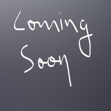
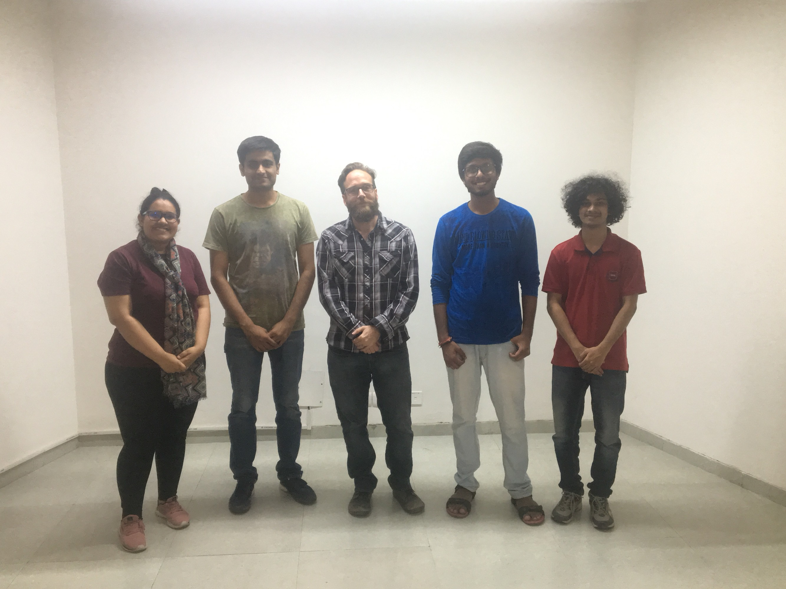

Data Sonification
Transform and listen to MIDI
Stakeholders - Artists with need of a midi based creative transformation toolkit
.png)
Graphical user interface
We realized the need for a system that enables MIDI manipulations for artists working on various DAWs and VSTs. We wanted to create a backbone of MIDI or OSC that artists can have a control of while making digital transformations. We developed an interactive toolset for seamless data sonification from various types of file formats like video, image, audio etc.. The MIDI or OSC messages obtained on the GUI, are made available for manipulation by users/artists using the provided transformations on the feature set in the GUI. Finally, they are sent for communication with different audio, visual and related software (such as SuperCollider and Reaper).
The project is ongoing with a user study due to be conducted in January 2019 on the GUI usability. Further the next iteration will have artificial intelligence embedded on the backend for more creative output solutions.
I worked on this project with Brihi Joshi (pursuing B.Tech in IIIT-Delhi), Aditya Adhikary and Naman Maheshwari (intern at Weave Lab). Manshul was responsible for providing assistive literature review on the work alongside providing technical expertise on the user study methods. Naman was responsible for getting his hands dirty and building the app based on the inputs of team discussions. Dr. Aman Parnami was the advisor for the work.
My responsibilities
- I was responsible for working on audio modality in the system.
- I came up with new ideas of the operations involved in MIDI manipulations for augmenting creative capabilities.
- I came up with the future ideas for the project which involve integrating artificial intelligence in the backend.
- I came up with new ideas to separate the components of an audio file, through new algorithms like blind source separation.
Member, ILIAD Lab, IIIT - Delhi
ILIAD Lab stands for Interdisciplinary Lab for Interactive AV Development. The name has been adopted from a Greek poem attributed to Homer. This is the creative and audio lab at IIIT-Delhi and I am a member of the team working under Dr Timothy Scott Moyers Jr(Tim). Tim has a philosophical and innovative side to his personality and we usually have on the walk discussions with him regarding the universal patterns in music. We also get a taste of the different types of music (and noise) which are and have remained prevalent, and the great musicians that have flourished throughout history when we are with him. It's a lab for fun and creativity with no deadlines for any work. Everyone just loves the company of each other, and find themselves involved in work together. We build toolkits for people that help in enabling creative capabilities for artists.
https://github.com/iliad-iiit-delhi
* [ User study on GUI usability due to be conducted in January ]